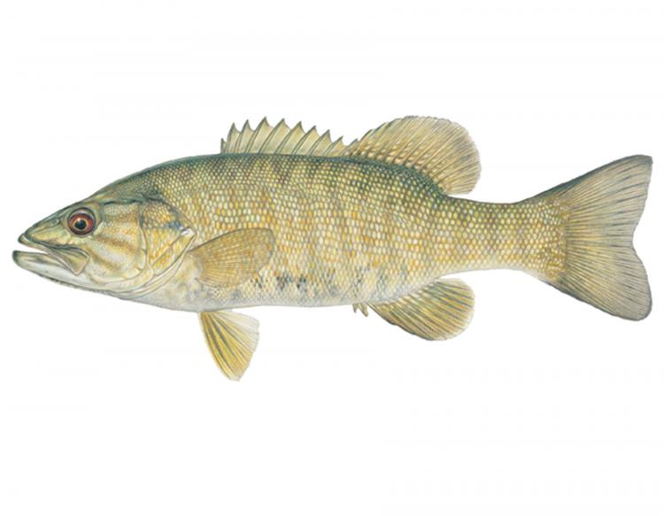

Micropterus dolomieu
common name(s): smallmouth, bronzeback, brown bass, brownie, smallie, bronze bass
Information
- Avg. Length 15-20 in.
- Avg. Weight .5-1.5 lb.
- Avg. Depth 1-2 ft.
- Lifespan 10-12 yrs
The smallmouth bass is generally brown, appearing sometimes as black or green (seldom yellow) with red eyes, and dark brown vertical bands, rather than a horizontal band along the side. There are 13–15 soft rays in the dorsal fin. The upper jaw of smallmouth bass extends to the middle of the eye. The smallmouth's coloration and hue may vary according to environmental variables such as water clarity or diet.

- Difficulty to catch Medium
- Shore vs Boat shore
- School 10-20 fish
- Best time of day springtime
- Raritycommon
- Hook size #8-#12
- AggressivenessMedium+
- Water Environment clear, calm water